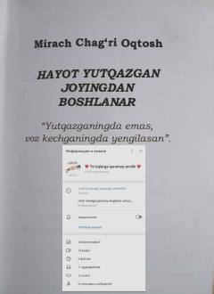

HYYutqazish emas, voz kechish — haqiqiy mag'lubiyat.
Mirach Chag'ri Oqtosh tomonidan yozilgan bu kitob hayotda yutqazish va voz kechish o'rtasidagi farqni o'rganadi. Asarda 'Yutqazganingda emas, voz kechganingda yengilasan' g'oyasi markaziy mavzu sifatida ilgari suriladi. Kitob o'quvchini qiyinchiliklarga qaramay hayotda davom etishga undaydi.